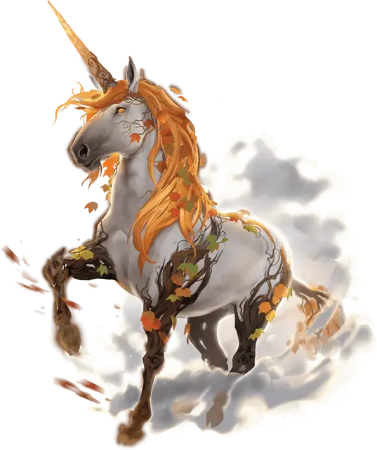

Хозяйка леса
Forest Master
Большой Небожитель (Единорог), нейтрально-добрый, именной НИП

Класс Доспеха 16 (природный доспех)
Хиты 105 (14к10 + 28)
Скорость 50 футов
| мод | спас | ||
|---|---|---|---|
| СИЛ | 18 | +4 | +4 |
| ЛОВ | 14 | +2 | +2 |
| ТЕЛ | 15 | +2 | +2 |
| мод | спас | ||
|---|---|---|---|
| ИНТ | 13 | +1 | +4 |
| МДР | 19 | +4 | +7 |
| ХАР | 17 | +3 | +3 |
Навыки Восприятие +7, Природа +4, Проницательность +7
Иммунитет к урону яд
Иммунитет к состояниям отравление, очарование, паралич
Чувства тёмное зрение 60 футов, пассивное Восприятие 17
Языки Небесный, Сильван, Эльфийский, Телепатия 60 фт.
Опасность 8 (3900 опыта)
Бонус мастерства +3
Особенности
Легендарное сопротивление (2/день). Если Хозяйка Леса проваливает спасбросок, она может вместо этого сделать его успешным.
Сопротивление магии. Хозяйка леса совершает с преимуществом спасброски от заклинаний и прочих магических эффектов.
Повелитель зверей. Хозяйка леса может понимать и общаться с любым зверем, даже если тот не владеет какими-либо языками.
Действия
Мультиатака. Хозяйка леса совершает две атаки Копытом или две атаки Лунным снарядом, или их комбинации.
Копыто. Рукопашная атака оружием: +7 к попаданию, досягаемость 5 фт., одна цель. Попадание: 11 (2к6 + 4) дробящего урона.
Лунный снаряд. Дальнобойная атака оружием: +7 к попаданию, дальность 60 футов, одна цель. Попадание: 11 (2к6 + 4) урона излучением.
Использование заклинаний. Хозяйка леса накладывает одно из следующих заклинаний, используя Мудрость в качестве базовой характеристики (Сл спасброска от заклинаний 15):
• Неограниченно: искусство друидов [druidcraft], туманное облако [fog cloud], указание [guidance]
• 2/день каждое: чудо-ягоды [goodberry], высшее восстановление [greater restoration], бесследное передвижение [pass without trace], разговор с растениями [speak with plants]
Бонусные действия
Извержение шиповника (перезарядка 4-6). Хозяйка леса прикасается своим рогом к земле и вызывая извержение 5-футовой стены шиповника длиной 90 футов и шириной 10 футов. Когда стена появляется, каждое существо в ее области отталкивается в ближайшее незанятое пространство, примыкающее к стене, и должно совершить спасбросок Ловкости Сл 15, получив 27 (6к8) колющего урона при провале или половину этого урона при успехе.
Стена из шиповника существует до начала следующего хода Хозяйки леса. Стена блокирует прямую линию обзора и считается труднопроходимой местностью для всех существ, кроме Хозяйки леса. В первый раз за ход, когда существо входит в зону действия стены, оно должно преуспеть в спасброске Ловкости Сл 15 или получить 13 (3к8) колющего урона.
Реакции
Туманный побег. Если Хозяйка леса получает урон от рукопашной атаки, то она вместе со всем снаряжением, которое она несёт или носит, телепортируется в незанятое пространство в пределах 30 футов, которое она может видеть.
Описание
Мудрый и могущественный единорог, который, по преданию, старше самих деревьев, властвует над существами Омраченного леса в Кринне. Её тело покрыто древними защитными лозами, а её рог окутан лунным сиянием. Все, кто угрожает землям Хозяйки леса, попадают в магический туман и непроходимые терновые чащи, но те, кто завоевывает её благосклонность, получают дар исцеления и защиту, пересекая лес.